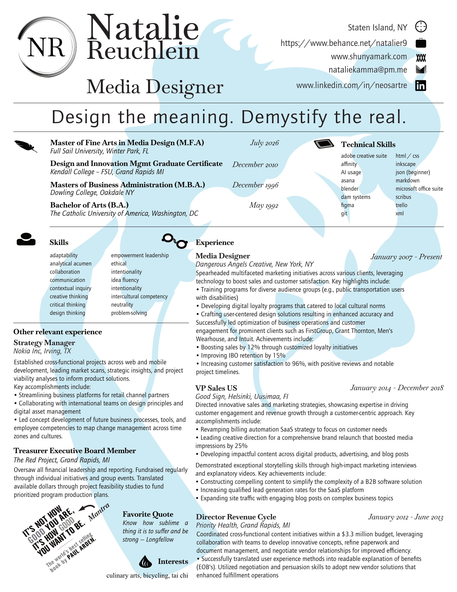

About
As a seasoned project-based designer with an MBA in Banking and Finance and an MFA in Media Design, I bring a unique blend of analytical and creative skills to the table. My experience in strategy management at Nokia Mobile Phones, where I developed branding strategies for mobile devices, has honed my ability to distill insights into actionable visual communications. With proficiency in graphic design, photography, web development (including CSS and HTML), I've successfully collaborated with teams to deliver high-impact results. In addition to technical skills, I bring a sculptor's mindset - carefully selecting the most purposeful elements and eliminating the rest. My approach emphasizes exploration, play, and reflection, fostering innovative solutions that exceed client expectations.
Projects
A selection of projects.

Resume
